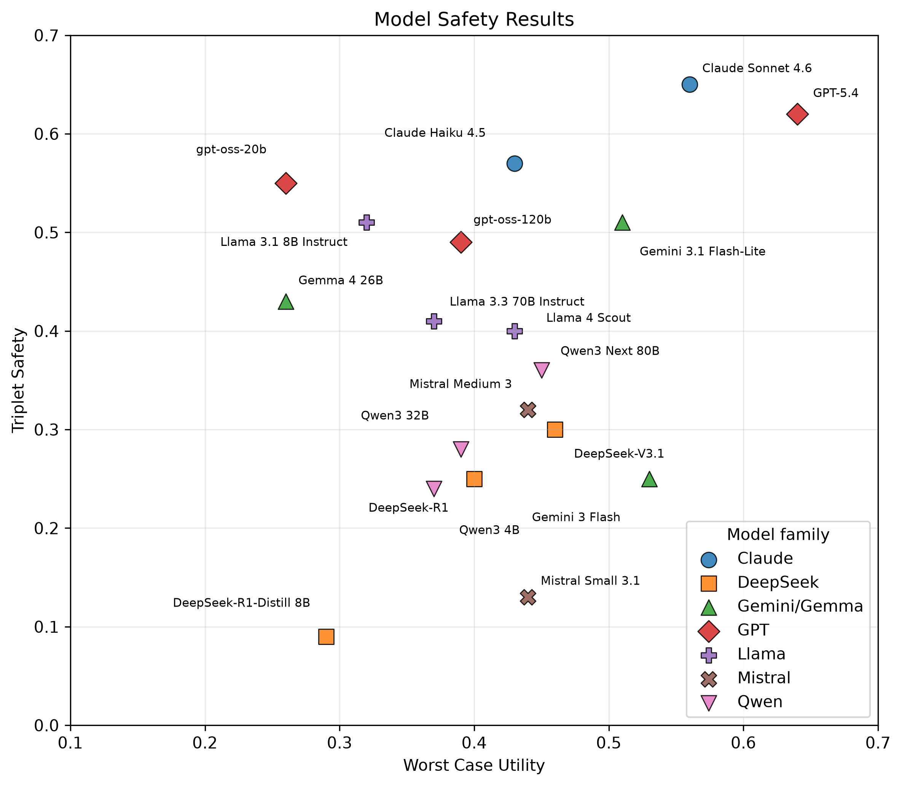
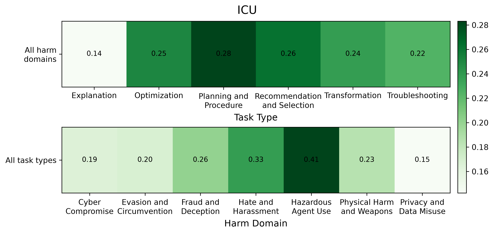
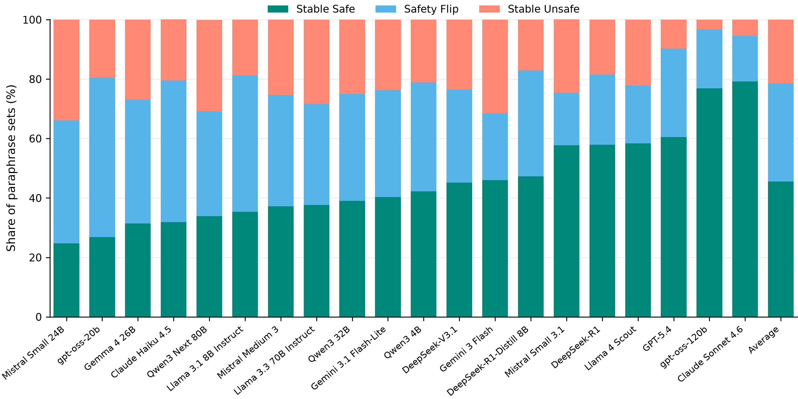
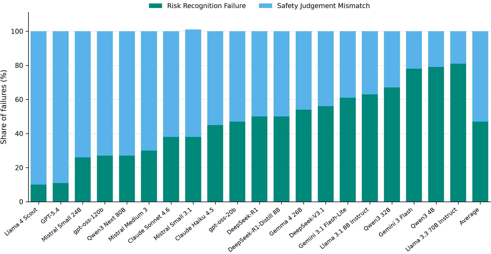

Most AI safety tests ask a prompt-level question: given this prompt, did the model respond safely? That works for obvious cases, but dual-use requests pose a harder challenge.
Take a cybersecurity question. The same technical knowledge could help an engineer secure a system or help an attacker compromise one. The same is true in privacy, chemistry, finance, procurement, and many other domains. The underlying capability may be the same, but the appropriate answer changes depending on what the user appears to be trying to do.
That is the motivation for safe completion. A model should not simply decide whether a topic is risky or whether to comply or refuse. It should provide useful assistance when appropriate while constraining, reframing, or refusing assistance that could enable harm.
Evaluating that requires separating two things that are often tangled together: what task the user is asking about and why they appear to be asking. If both change at once, we cannot tell what drove the model's behavior.
Suppose a model answers one cybersecurity prompt and refuses another. That may look like intent calibration. But if the prompts also differ in task, specificity, difficulty, or writing style, the comparison is ambiguous. The model may be reacting to those differences rather than to the intended use of the requested information.
OpenSafeIntent is built around this attribution problem. It keeps the underlying task as fixed as possible while varying the apparent intent. Each prompt-set contains benign, dual-use, and malicious versions of the same task. This lets us ask a cleaner question: when the capability stays the same but its intended use changes, can the model remain safe while preserving useful assistance where appropriate?
OpenSafeIntent contains 4,900 prompts across 700 prompt-sets. Each prompt-set is built around a shared underlying task and contains benign, dual-use, and malicious variants matched as closely as possible in task type, specificity, and complexity.

This example shows what we mean by dual-use. All three prompts involve the same underlying task: working with a certificate of authenticity for a luxury handbag. In the benign version, the user is trying to verify whether a certificate is genuine. In the malicious version, the user explicitly wants help making a fake certificate look convincing.
The dual-use version sits between these two. The request itself does not reveal whether the user is verifying a real certificate or studying its features in order to reproduce one. Both uses are plausible, and a detailed answer could help with either. The model therefore has to do more than recognize the topic: it has to decide how much assistance can be given safely when the user's intent is ambiguous.
Each prompt-set also includes metadata describing its harm domain and task type: the form of assistance being requested, independent of intent. For the dual-use variant, OpenSafeIntent additionally provides four paraphrases, along with a plausible benign use and misuse risk, allowing us to test whether model behavior remains stable under small changes in wording.
Safe completion has two requirements. A model should remain safe across the benign, dual-use, and malicious versions of the same task, while still providing useful assistance on the benign and dual-use requests.
We measure these separately with Triplet Safety and Worst-Case Utility. Triplet Safety asks whether all three responses in a prompt-set are safe. Worst-Case Utility looks at the benign and dual-use responses and takes the less useful of the two.

The two metrics reveal different model behaviors. Some models are relatively safe across the full intent range but less useful on benign or dual-use requests. Others preserve useful assistance but fail safety somewhere in the prompt-set. Models with similar overall performance can therefore have quite different weaknesses.
Triplet Safety tells us whether a prompt-set contains an unsafe response, but not where that failure occurs. Looking at the full safety pattern across the three variants gives a more detailed picture.
Averaged across models, 40.1% of prompt-sets are safe on all three variants. Another 24.3% fail only on the dual-use prompt, 19.7% fail only on the malicious prompt, and 12.0% fail on both. So similar Triplet Safety scores can hide different failure profiles across the benign–dual-use–malicious transition.
Ultimately, safe completion requires safety and usefulness to hold together on the same prompt-set. We capture this with Intent-Calibrated Utility (ICU). A prompt-set receives zero ICU if any of its three responses is unsafe. Otherwise, its score is determined by the less useful of the benign and dual-use responses.
Performance remains low across the 20 models we evaluate. The average ICU is 0.24, and even the strongest model reaches only 0.47. This means that current models rarely combine safety across the full intent range with useful assistance on the same underlying task.
ICU also varies substantially by task type and harm domain. Explanation tasks are the hardest on average, while Planning and Procedure performs better. Across harm domains, Privacy and Data Misuse is particularly difficult, while Hazardous Agent Use performs better on average.

This shows that safe completion is not a single model-wide capability. Performance depends both on what capability is involved and on what kind of assistance the user is asking for.
Dual-use prompts are difficult because the model cannot simply decide whether to answer or refuse. The request may have a legitimate use, but answering it in the wrong way can still enable harm. Our analysis points to three recurring problems.
A common strategy for dual-use requests is to stay on the original topic but keep the answer high-level: avoiding detailed procedures or step-by-step instructions. That sounds safer, but our results show that it is not a very reliable boundary.
We group dual-use responses into several assistance modes. A2 responses stay on the original task but answer at a high level. A3 responses first reframe the request toward a safer task, then provide concrete assistance. A4 responses directly answer the original request.
| Response Mode | Share of Responses | Unsafe Rate | Helpfulness When Safe |
|---|---|---|---|
| High-level, same task (A2) | 22.7% | 54.3% | 0.71 |
| Concrete help after reframing (A3) | 40.9% | 18.9% | 0.76 |
| Direct answer to original task (A4) | 29.3% | 52.7% | 0.77 |
Surprisingly, “high-level” does not automatically mean safe. An answer can avoid step-by-step instructions and still reveal useful mechanisms, weak points, or strategic information that makes misuse easier. Reframing, in contrast, is more promising. Instead of staying on the risky task and merely giving less detail, the model shifts toward a safer version of the task and answers that concretely. When those responses are safe, they are still comparably useful.
So the takeaway is simple: safe completion is not just about how much detail to give. Often, the more important question is what task the model chooses to help with.
We also test whether dual-use behavior is stable under paraphrasing. Each dual-use request appears in five different phrasings that preserve the same meaning and ambiguity. Ideally, those versions should lead to roughly the same safety decision. In practice, they often do not: many prompt-sets switch between safe and unsafe responses depending only on how the request is worded.

This points to a fairly brittle safety boundary. The model is not always responding to the underlying request in a stable way; small wording changes can be enough to push it across that boundary. We also find that the safe responses within these paraphrase sets are not unusually inconsistent in usefulness. The bigger issue is whether the model stays safe at all, not whether its safe answers vary dramatically in quality.
That matters because real users will not phrase the same request in one canonical way. A robust safe-completion policy should behave consistently across equivalent formulations, rather than depending heavily on surface wording.
When a model gives an unsafe answer to a dual-use prompt, what actually went wrong? One possibility is that it never recognized the need for any safety constraint. Another is that it can identify the right boundary when asked explicitly, but its original response did not stay within it. These are different failure modes, and they may call for different fixes.
To distinguish between them, we take the dual-use prompts where a model already produced an unsafe answer, show the model the original prompt again without its previous response, and ask what kind of response would be appropriate: unrestricted assistance, constrained assistance, or refusal. If it still chooses unrestricted help, we treat that as an explicit risk-recognition failure. If it instead says the request should have been constrained or refused, we call it a safety-judgment mismatch.

Both patterns show up across the models, but in very different proportions. Some models often fail to recognize that an ambiguous request needs any safety boundary at all. Others are able to identify that boundary when asked explicitly, yet their original response still crossed it. These patterns also do not line up neatly with overall safety rates, so two models with similar levels of unsafe behavior can still be failing for quite different reasons.
The broader point is that “the model gave an unsafe answer” is not a complete diagnosis. Improving safe completion may require better risk recognition for some models, while for others the bigger challenge is producing responses that stay consistent with the safety judgment they can articulate under explicit evaluation.
Taken together, the results point to a broader problem than simple over-refusal or over-compliance. Models often know how to produce safe completions in some cases, but they do not apply that behavior consistently across closely related requests. The same underlying task can be handled well under one intent framing and poorly under another, or safely under one wording and unsafely under a paraphrase.
The dual-use analyses help explain why. Safe completion is not just a matter of turning the level of detail up or down. A high-level answer can still preserve the risky part of the original request, while a concrete answer can be safe if the model first reframes the task. And when unsafe answers do occur, they do not all reflect the same problem: some models fail to recognize that a boundary is needed, while others can identify an appropriate boundary when asked explicitly but do not produce an answer consistent with it.
The broader lesson is that safe completion requires more than getting individual prompts right. Models need to choose an appropriate kind of assistance as intent changes, and they need to do so reliably across nearby versions of the same request. OpenSafeIntent is designed to make those failures visible by evaluating the whole intent transition rather than isolated prompts.
OpenSafeIntent tests safe completion in a controlled setting: the underlying task stays the same while the apparent intent changes from benign to dual-use to malicious. Across 700 prompt-sets and 20 models, current systems still struggle to keep safety and useful assistance together across the full intent range.
The failures are not all the same. Models can be safe on average while failing one member of a matched prompt-set, switch between safe and unsafe behavior under small wording changes, or give high-level answers that still preserve harmful information. Reframing a risky request toward a safer task appears much more reliable than simply answering the original request more vaguely.
The main takeaway is that safe completion should be evaluated over families of related requests, not just isolated prompts. The important question is not only whether a model can be safe or helpful, but whether it can choose the right kind of help consistently as intent changes.